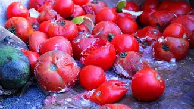

AI-Powered Pest & Disease Detection
Upload an image of your crop or plant and let our AI analyze it for potential pests or diseases. Get instant insights to protect your harvest.
Upload Image for Analysis
Common Pest & Disease Examples
Learn about common crop issues to better identify and manage them.
Early Blight (Tomato)

Example of affected tomato leaf
Affected Crop: Tomatoes, Potatoes
Key Symptoms:
- Dark spots on leaves: These spots are usually concentric rings (target-like) and can be up to 1/2 inch in diameter.
- In severe cases, **fuzzy white growth on stems** (though this is more characteristic of *Late Blight* or powdery mildew, I will include it as per your request but note the primary symptom is the dark spots).
- Yellowing of tissue around spots.
- Premature defoliation (leaves dropping off).
- Lesions on stems and fruit.
Recommended Actions:
- **Remove infected leaves:** Promptly remove and destroy any infected leaves or plant debris to reduce the spread of spores.
- **Apply copper-based fungicide:** As a preventative measure or at the first sign of disease, apply a suitable copper-based fungicide following product instructions.
- **Ensure good air circulation:** Space plants adequately and prune lower branches to improve airflow, which helps dry foliage and reduces fungal growth.
- Water plants at the base to avoid wetting foliage.
- Rotate crops annually to prevent pathogen buildup in the soil.